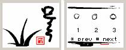
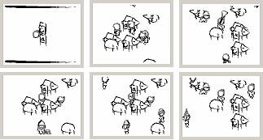
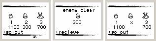
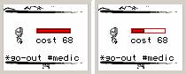
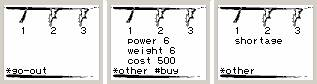
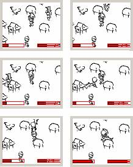
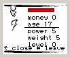
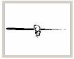
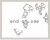

2004 muru
download
index
- description
- screen shot
- complex image
- auto new map
- floor system
조작 설명
첫 화면->*(저작 화면)
첫 화면->#(시작 화면)
2,4,6,8(방향)
5(무기 꺼내기, 넣기)
#(menu)
description
- mobile rpg game
- 완성작
- 모바일 폰에서 테스트 완료(SCH-X600D, LG-SD280)
- 개발 기간 5개월
- 2004 한게임 컨테스트 출품작
- PT에서 지참하여 시연 가능
screen shot
|
시작 화면

마을에서...

포도청 화면

|
의원 화면

대장간 화면

전투 장면

|
레벨 관리

엔딩


|
complex image
이미지들을 조합하여 요소를 형성시킨다. 예를 들어 사람의 경우 얼굴, 몸체, 다리, 무기의 이미지들을 별도로 만들고 그것들을 조합하여 하나의 사람이 만들어진다. 이미지들은 연결점을 지정하여 조합된다.
auto new map
쿼드트리를 기반을로 한개의 노드에 정해진 수량 만큼의 요소를 난수의 위치에 배치시켜 새로운 맵이 만들어진다.
floor system
요소들의 바닥면을 정의하여 충돌 체크를 수행함으로 z 값이 존재하는 것처럼 입체감을 표현한다.